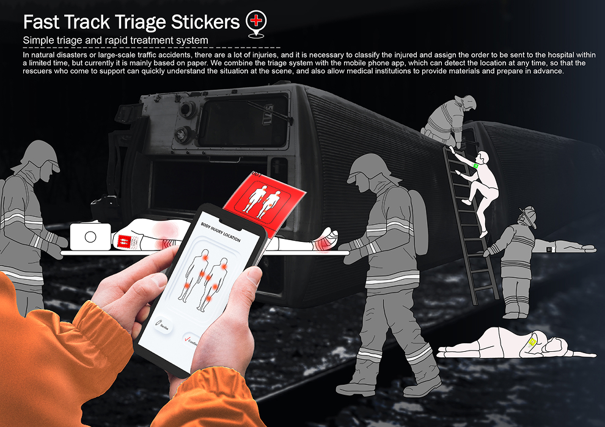
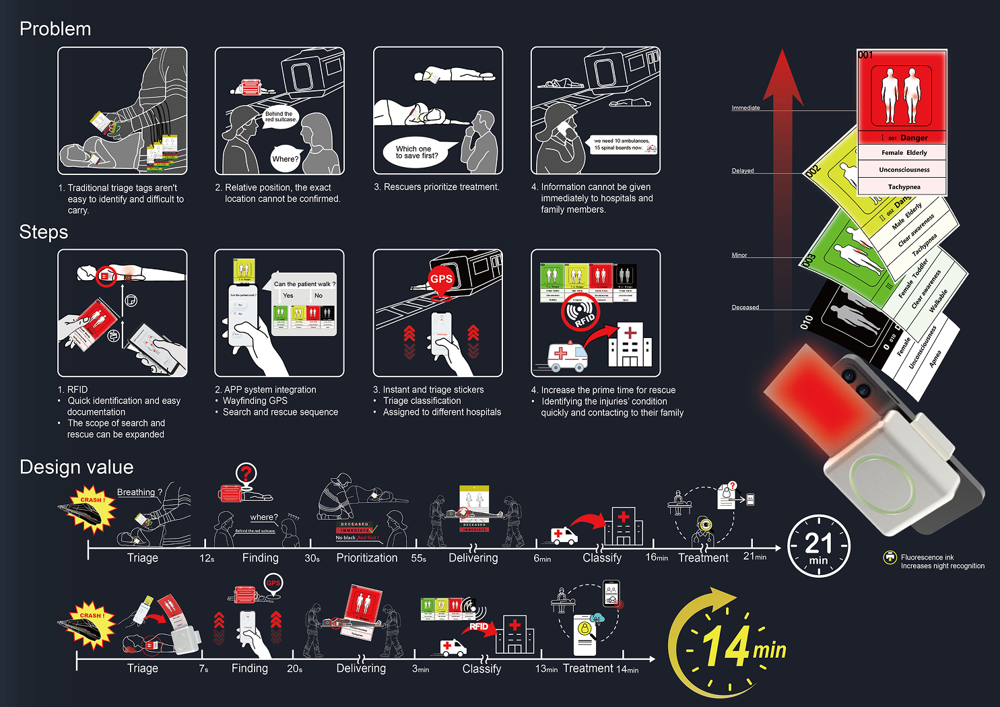
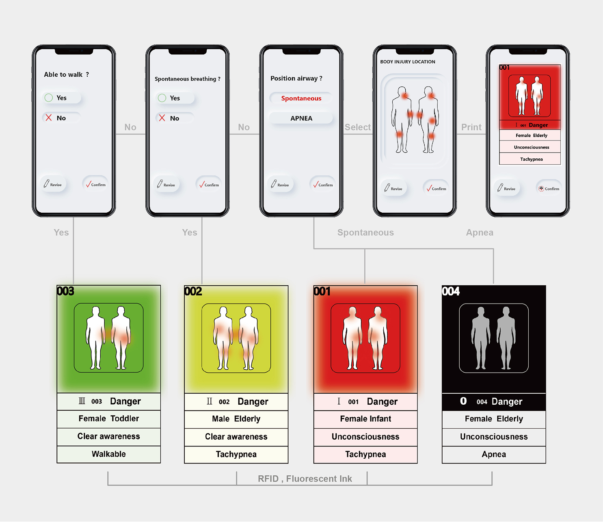

PROJECTS
Fast Track Triage Stickers | 快速檢傷分類

在自然災害或大型交通事故中傷患較多，需快速檢傷分類，依照傷患程度送醫。透過手機APP判斷呼吸、意識及行走能力，分類後利用RFID建檔並列印具螢光效果的傷票，方便夜間搜救。

傷票內嵌定位與RFID功能，標示傷情與位置，便於救援人員辨識與尋找。送醫時，RFID提供所需物資資訊，並自動掃描傷票，快速建檔聯絡家屬。此設計提升黃金救援時間的利用，減少救助過程的障礙。

藉由簡易直觀的問答 (判斷傷患意識、行走、呼吸) APP 快速檢傷分類，而每一張傷票都含有 RFID及 隱形螢光油墨，增加夜識性與快速建檔。